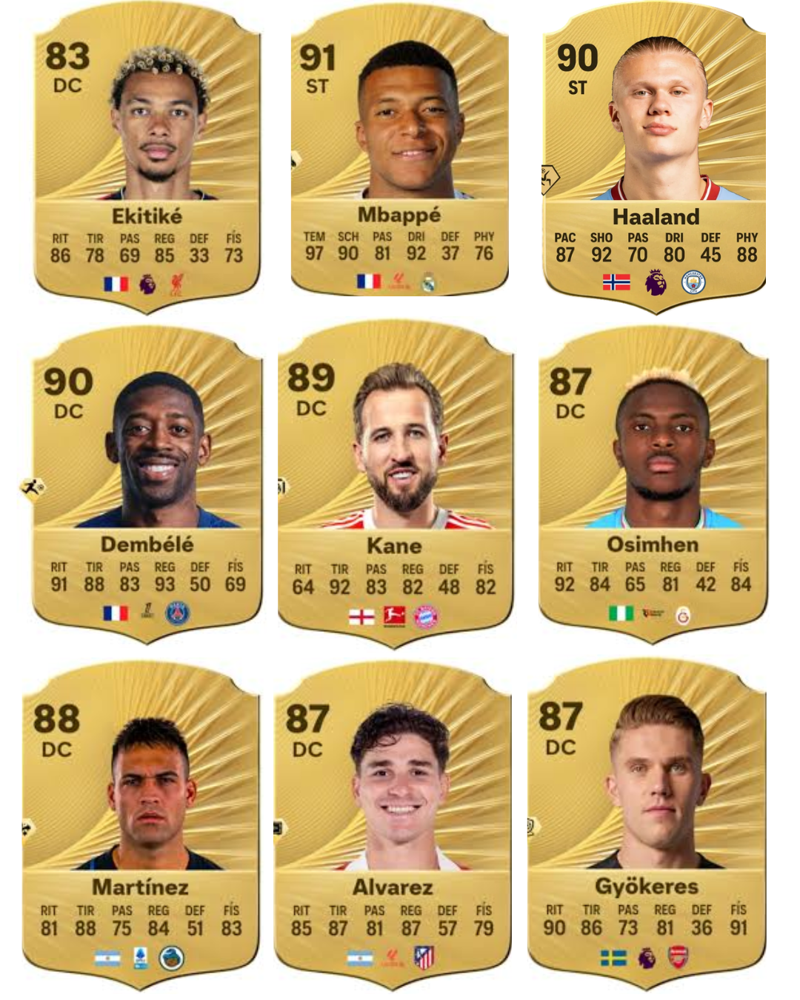
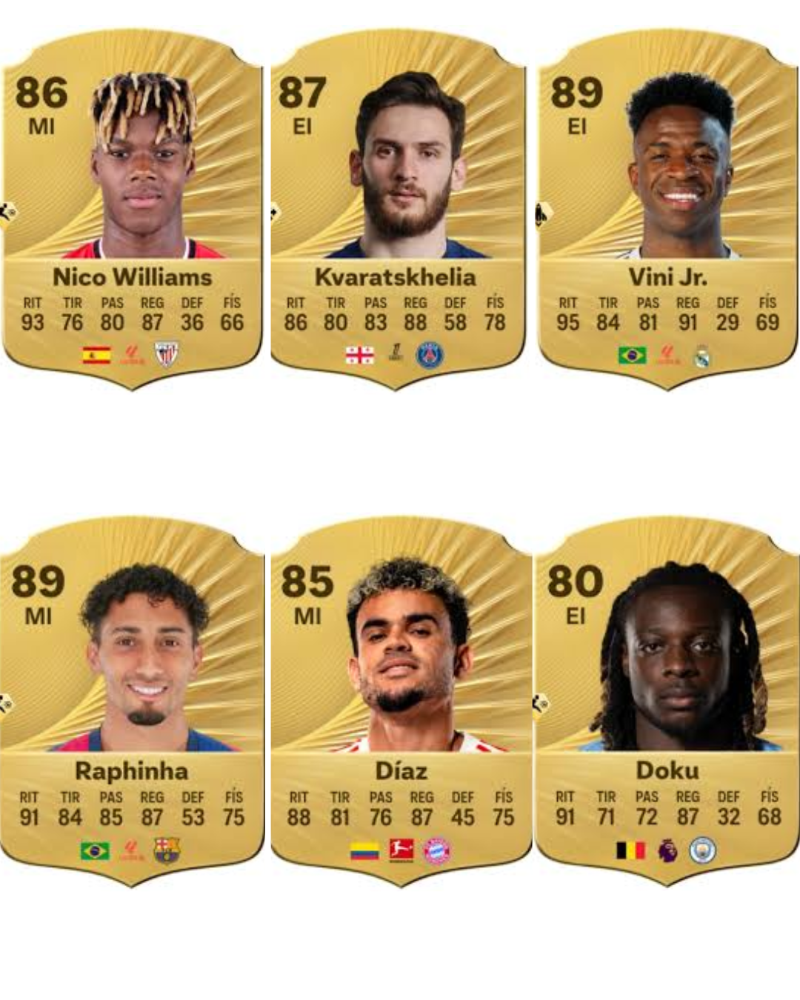
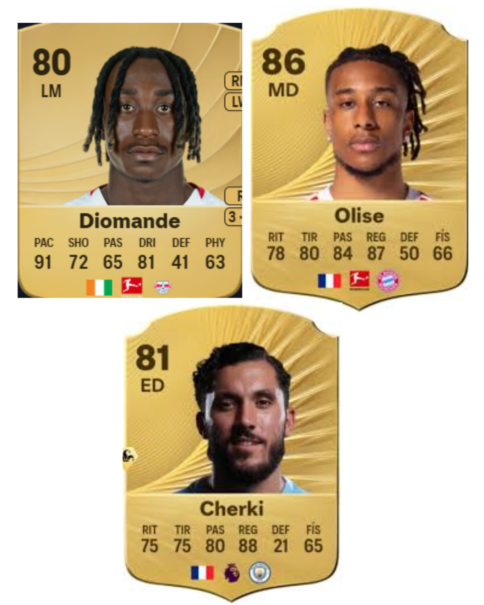
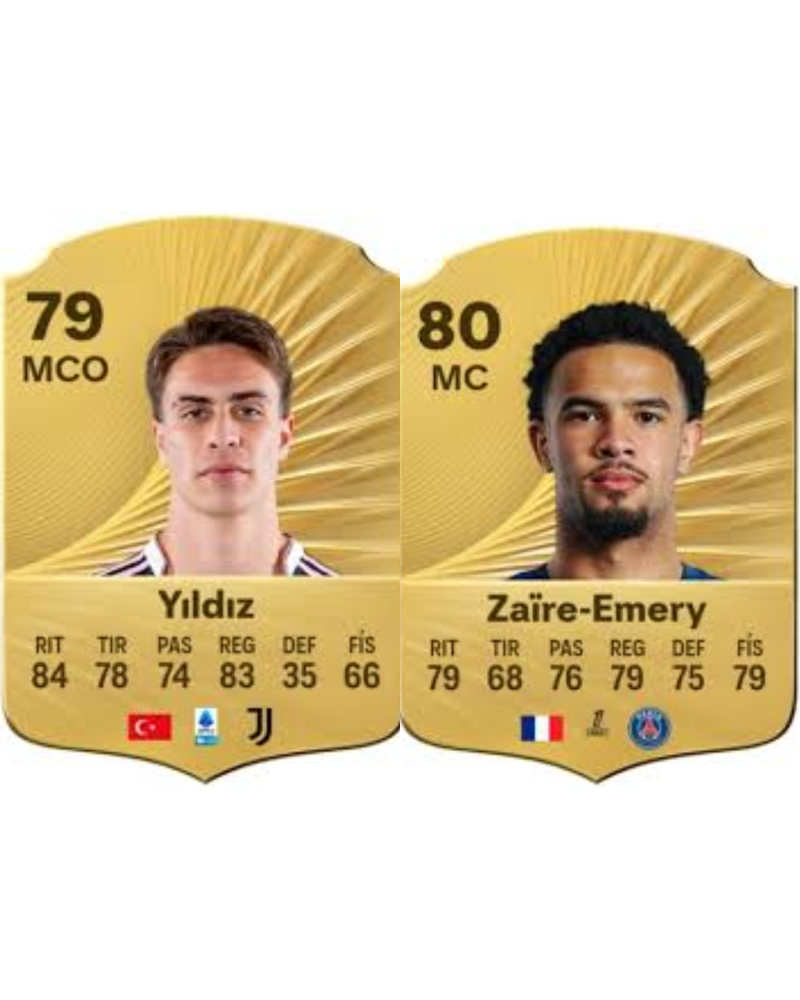
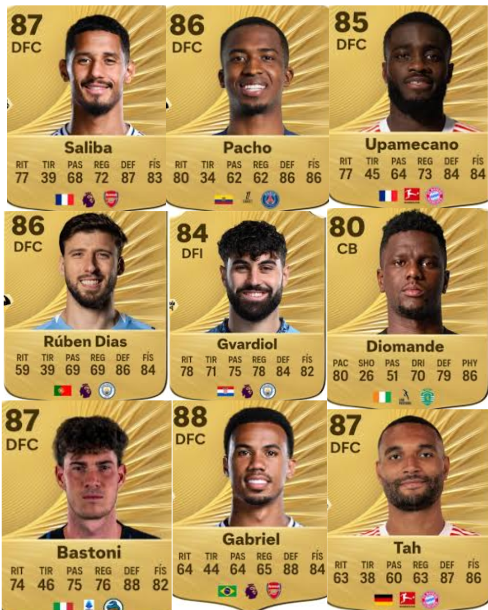
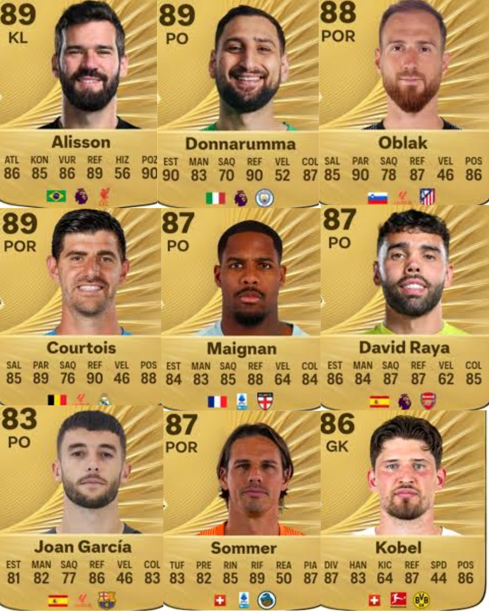

LOS MEJORES JUGADORES PARA MODO MANAGER FIFA 26
MI PLANTILLA FAVORITA
A continuación, se detallan los jugadores clave para armar un equipo campeón, divididos por sus posiciones en el campo.
|
Hugo Ekitike, Mbappé, Haaland, Harry Kane, Dembélé, Oshimhen, Lautaro, Julián Alvarez o Viktor Gyökeres (ST)

Nico Willams, Kvaratskhelia, ViniJR, Raphinha, Luis Díaz o Doku (EI)

Yan Diomande, Olise O Cherki son jovenes promesas con futuro ( SI QUEREIS TAMBIEN PODEIS A LAMINE YAMAL O A DOUE PERO PARA MI ES MAS DIVERTIDO JUGADORES CON PROCESO DE EVOLUCICÓN EN CAMBIO LOS OTROS DOS YA ESTAN CHETADOS DESDE EL INICIO)

Kenan Yildiz i Warren Zaïre-Emery (MC, podríais también utilizar a Valverde, Bellingham o Rice. Se que Yildiz no juega en esa posición pero también puede y se desmarca muy bien)

William Saliba, Pacho, Bastoni, Gabriel, Gvardiol, Tah, Upamecano y por ultimo una joya que brillara en el futuro és Ousmane Diomande (DFC)

Nuno mendes, Hakimi, riccardo califiori, Federico Dimarco, Alphonso Davies, Reece James, Jules Koundé,Theo Hernández (LD Y LI)
Alisson, Donnarumma, Oblak, Courtois, Mike Maignan, David Raya, Joan García o Sommer (GK)

Mención honorifica: Piero Hincapié
¿Cuál es tu presupuesto inicial favorito?
¿Qué buscas primero en un jugador joven? (Elige varias):
Link de info jugadores
|